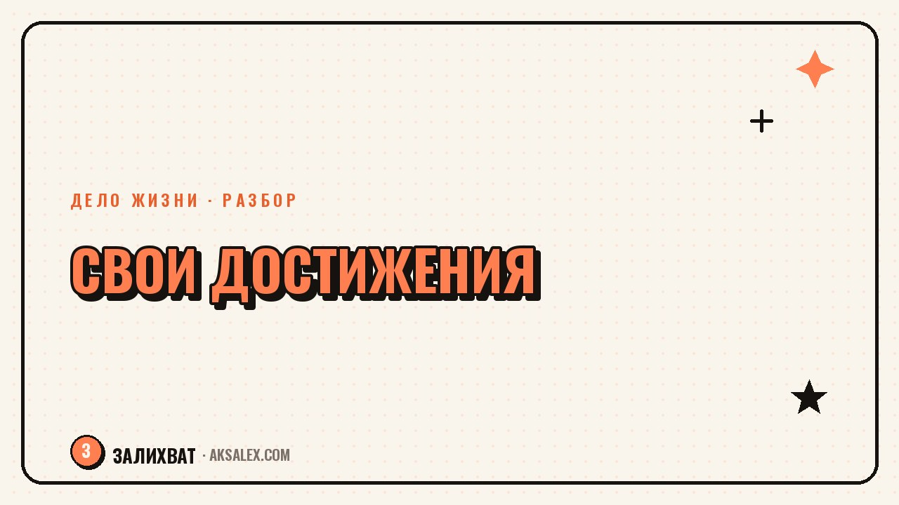

Обесценивание своих достижений: что делать

Закончила проект - и сразу список того, что можно было сделать лучше. Получила похвалу - и мысль «это несложно, любой бы справился». Если знакомо, дело не в скромности, а в привычке обесценивать результат раньше, чем успеешь его заметить. Привычку можно разглядеть и постепенно поменять, и для этого не нужно ждать, пока появится «настоящее» большое достижение.
Как звучит обесценивание внутри головы
Обесценивание редко звучит как явная фраза «я ничего не стою». Чаще это короткие автоматические мысли сразу после успеха: «повезло», «это было не так уж сложно», «любой бы справился на моём месте». Они проскакивают настолько быстро, что человек даже не замечает - как будто результат испарился в тот момент, когда появился.
Типичные фразы-обесценивания
- Это чистая случайность, не моя заслуга
- Я же только делала свою работу, тут нечем гордиться
- Другие на моём месте справились бы быстрее и лучше
- Это мелочь, вот когда сделаю что-то действительно большое - тогда можно порадоваться
Почему мозг так устроен
Внимание устроено так, что оно быстро переключается на следующую цель и плохо удерживает уже завершённое - это общий механизм, не индивидуальный недостаток. У людей, которые привыкли расти через сравнение с другими или через внешнюю оценку, этот механизм усиливается: радость от результата быстро заменяется вопросом «а что теперь, а что дальше, а достаточно ли этого».
Отдельно влияет среда, где достижения было принято сравнивать с чужими или обязательно искать, что можно было сделать лучше. Если в детстве похвала почти всегда шла с добавкой «но вот тут можно было и получше», мозг со временем перестаёт ждать паузы на радость и сразу переходит к критике.
Как переформулировать типичные мысли
| Автоматическая мысль | Что происходит на самом деле | Как переформулировать |
|---|---|---|
| Это чистая случайность | Ты недооцениваешь подготовку, которая привела к результату | Я подготовилась, и это сработало |
| Любой бы справился | Ты сравниваешь себя с воображаемым идеальным человеком | Я справилась именно я, в моих условиях |
| Я могла сделать лучше | Ты переносишь фокус с результата на недостижимый идеал | Результат получен, улучшения можно обсудить отдельно |
| Это мелочь, не считается | Ты поднимаешь планку «настоящего» достижения бесконечно | Маленький результат - тоже результат, он существует |
Упражнение: как научиться замечать сделанное
Хорошо работает короткая ежедневная привычка: вечером записывать три факта о том, что было сделано за день, без оценки «хорошо» или «плохо». Не «я молодец», а сухое перечисление: написала отчёт, ответила на сложное письмо клиенту, доделала задачу, которую откладывала неделю. Со временем накопленный список фактов становится труднее игнорировать, чем единичная мысль в моменте.
Дело не в том, чтобы начать хвалить себя громко и постоянно. Дело в том, чтобы хотя бы заметить - вот это было сделано мной, и это факт, а не повод для спора.
- Записывай факт, а не оценку - «сделала презентацию», а не «справилась хорошо»
- Раз в неделю перечитывай список за прошлые дни, не редактируя его
- Если тянет дописать «но можно было лучше» - остановись и оставь факт отдельно от критики
- Делай это даже в дни, когда кажется, что ничего значимого не произошло
Где грань между здоровой самокритикой и обесцениванием
Здоровая самокритика конкретна и ведёт к действию: «в следующий раз лучше начать подготовку на три дня раньше». Обесценивание абстрактно и ведёт только к плохому настроению: «я плохо справляюсь», без привязки к тому, что конкретно можно изменить. Если после разговора с собой остаётся план действий - это рабочая самокритика. Если остаётся только тяжесть без продолжения - это обесценивание.
Если привычка обесценивать достижения мешает принимать решения, не даёт просить повышение или новую роль, и за ней стоит постоянная тревога, а не обычная скромность - стоит обсудить это с психологом. Это не диагноз и не повод винить себя ещё сильнее, а рабочий инструмент, когда самостоятельных наблюдений уже не хватает.
Частые вопросы
Почему я не радуюсь своим достижениям, даже когда всё получилось?
Скорее всего, внимание привычно перескакивает на следующую цель раньше, чем успевает зафиксировать текущий результат. Это распространённый механизм, особенно у тех, кто рос в среде с постоянным сравнением или обязательной критикой после похвалы.
Это нормально - считать свои успехи случайностью?
Разово - да, но если это происходит с каждым результатом без исключения, стоит обратить внимание. Привычка сразу объяснять успех внешними факторами, а не своими усилиями, со временем мешает видеть реальную картину своих возможностей.
Как перестать сравнивать себя с другими, когда оцениваешь свой результат?
Попробуй сравнивать не с другими людьми, а с собой в прошлом - с той версией себя, которая месяц или год назад не умела того, что умеешь сейчас. Это честнее, потому что ты видишь свой условия и свой путь, а не чужую историю со стороны.
Помогает ли дневник достижений на самом деле?
Да, если вести его регулярно и записывать факты без оценки. Единичная запись мало что меняет, но накопленный за несколько недель список фактов труднее обесценить одной автоматической мыслью.
Когда обесценивание достижений - повод обратиться к психологу?
Если за этим стоит постоянная тревога, страх брать новые задачи или просить повышение, и самостоятельные упражнения не меняют картину месяцами. Это не диагноз, а сигнал, что нужна помощь со стороны, чтобы разобраться глубже.
Раз тема оказалась полезной, вот что почитать следующим. Разбираемся, как понять, что усталость от работы - это сигнал уходить, а не одна тяжёлая неделя.
Читать статью →а не вручную